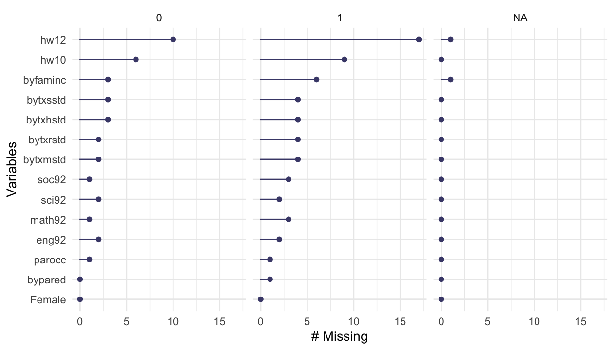
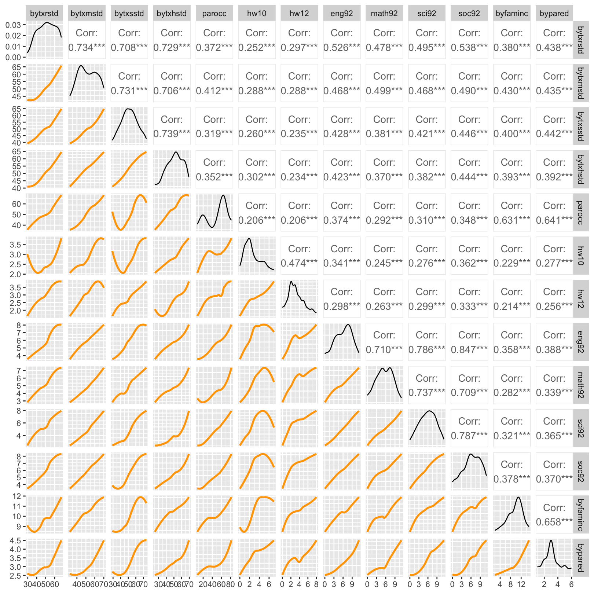

Load libraries
library(haven)
library(psych)
library(tidyverse)
library(lavaan)
library(semTools)
library(manymome)mixed
library(haven)
library(psych)
library(tidyverse)
library(lavaan)
library(semTools)
library(manymome)MVN: An R Package for Assessing Multivariate Normality
library(covsim)
set.seed(1)
sigma.target <- matrix(c(1, 0.4, 0.3, 0.4, 1, 0.4, 0.3, 0.4, 1), 3)
ig.sample <- rIG(N = 10^3, sigma.target = sigma.target, reps = 1, skewness = c(0, sqrt(8), 0), excesskurtosis = c(0, 12, 6))
df <- ig.sample |> as.data.frame() |> as_tibble()df |> print()# A tibble: 1,000 × 3
X1 X2 X3
<dbl> <dbl> <dbl>
1 -0.626 -0.609 -0.472
2 0.184 -0.125 0.799
3 -0.836 -0.749 -0.773
4 1.60 2.95 0.975
5 0.330 -0.268 0.693
6 -0.820 1.22 1.27
# ℹ 994 more rowslibrary(MVN)
mvn(df) |> print()$multivariateNormality
Test HZ p value MVN
1 Henze-Zirkler 26.31374 0 NO
$univariateNormality
Test Variable Statistic p value Normality
1 Anderson-Darling X1 0.2219 0.8297 YES
2 Anderson-Darling X2 62.9376 <0.001 NO
3 Anderson-Darling X3 4.1598 <0.001 NO
$Descriptives
n Mean Std.Dev Median Min Max 25th 75th
X1 1000 -0.011648142 1.0349158 -0.03532423 -3.008049 3.810277 -0.6973732 0.6884280
X2 1000 0.027678496 1.0566535 -0.18501542 -1.580517 8.663489 -0.5357336 0.2325938
X3 1000 0.009367604 0.9815131 -0.01418352 -4.190712 4.747516 -0.5385744 0.5710483
Skew Kurtosis
X1 -0.01913836 -0.007768915
X2 2.96485086 13.333058070
X3 0.29143698 2.195906716
# multivariate normality
mvn(data = df, mvnTest = "hz")$multivariateNormality |> print() Test HZ p value MVN
1 Henze-Zirkler 26.31374 0 NO# multivariate normality plot
results <- mvn(data = df, multivariatePlot = "qq")mvn(data = df, univariateTest = "AD")$univariateNormality |> print() Test Variable Statistic p value Normality
1 Anderson-Darling X1 0.2219 0.8297 YES
2 Anderson-Darling X2 62.9376 <0.001 NO
3 Anderson-Darling X3 4.1598 <0.001 NO # univariate normality histogram
results <- mvn(data = df, univariatePlot = "histogram")# univariate normality scatterplot
results <- mvn(data = df, univariatePlot = "scatter")# outliers
results <- mvn(data = df, mvnTest = "hz", multivariateOutlierMethod = "adj")
hw_mean <- haven::read_sav("data/chap 19 latent means/Homework means.sav")
hw_mean <- hw_mean |>
select(-ethnic, -Female, hw10 = f1s36a2, hw12 = f2s25f2)
set.seed(123)
hw_mean <- hw_mean |> sample_n(300)mvn(data = hw_mean)| Test | HZ | p value | MVN |
|---|---|---|---|
| <chr> | <dbl> | <dbl> | <chr> |
| Henze-Zirkler | 1.014463 | 2.875198e-07 | NO |
| Test | Variable | Statistic | p value | Normality | |
|---|---|---|---|---|---|
| <I<chr>> | <I<chr>> | <I<chr>> | <I<chr>> | <I<chr>> | |
| 1 | Anderson-Darling | bytxrstd | 2.0702 | <0.001 | NO |
| 2 | Anderson-Darling | bytxmstd | 3.1087 | <0.001 | NO |
| 3 | Anderson-Darling | bytxsstd | 0.5534 | 0.1522 | YES |
| 4 | Anderson-Darling | bytxhstd | 1.6028 | 4e-04 | NO |
| 5 | Anderson-Darling | parocc | 17.0342 | <0.001 | NO |
| 6 | Anderson-Darling | hw10 | 9.8312 | <0.001 | NO |
| 7 | Anderson-Darling | hw12 | 5.7268 | <0.001 | NO |
| 8 | Anderson-Darling | eng92 | 1.4401 | 0.001 | NO |
| 9 | Anderson-Darling | math92 | 1.1281 | 0.0058 | NO |
| 10 | Anderson-Darling | sci92 | 0.7714 | 0.0445 | NO |
| 11 | Anderson-Darling | soc92 | 1.0731 | 0.008 | NO |
| 12 | Anderson-Darling | byfaminc | 3.2795 | <0.001 | NO |
| 13 | Anderson-Darling | bypared | 10.0582 | <0.001 | NO |
| n | Mean | Std.Dev | Median | Min | Max | 25th | 75th | Skew | Kurtosis | |
|---|---|---|---|---|---|---|---|---|---|---|
| <int> | <dbl> | <dbl> | <dbl> | <dbl> | <dbl> | <dbl> | <dbl> | <dbl> | <dbl> | |
| bytxrstd | 247 | 52.252498 | 9.729559 | 52.744 | 29.459 | 67.499 | 44.2160 | 61.0010 | -0.21638586 | -0.9412619 |
| bytxmstd | 247 | 52.921267 | 9.785079 | 52.593 | 32.049 | 70.118 | 44.5670 | 60.9505 | 0.01656429 | -1.1789082 |
| bytxsstd | 247 | 52.323486 | 10.027881 | 52.525 | 29.079 | 73.829 | 45.2340 | 59.2450 | 0.03041495 | -0.6364867 |
| bytxhstd | 247 | 52.560567 | 9.909501 | 53.781 | 25.166 | 69.508 | 45.8075 | 60.7700 | -0.38347369 | -0.5212263 |
| parocc | 247 | 54.081619 | 20.713100 | 61.320 | 7.320 | 81.870 | 49.7000 | 66.1800 | -0.82741669 | -0.5561309 |
| hw10 | 247 | 2.627530 | 1.708102 | 2.000 | 0.000 | 7.000 | 1.0000 | 4.0000 | 0.74801463 | -0.2616338 |
| hw12 | 247 | 3.210526 | 1.901062 | 3.000 | 0.000 | 8.000 | 2.0000 | 4.0000 | 0.59291685 | -0.1371959 |
| eng92 | 247 | 6.594130 | 2.344748 | 7.000 | 0.500 | 11.120 | 4.9000 | 8.3300 | -0.27431510 | -0.6372800 |
| math92 | 247 | 5.943846 | 2.397474 | 6.000 | 0.500 | 11.120 | 4.2500 | 7.7500 | -0.12080923 | -0.7570884 |
| sci92 | 247 | 6.252267 | 2.468523 | 6.500 | 0.670 | 11.330 | 4.5000 | 8.0000 | -0.14739430 | -0.7185309 |
| soc92 | 247 | 6.708988 | 2.473552 | 6.830 | 0.000 | 11.000 | 5.0700 | 8.6450 | -0.32097156 | -0.5374977 |
| byfaminc | 247 | 10.121457 | 2.438142 | 10.000 | 3.000 | 15.000 | 8.0000 | 12.0000 | -0.38695907 | -0.1149796 |
| bypared | 247 | 3.283401 | 1.316194 | 3.000 | 1.000 | 6.000 | 3.0000 | 4.0000 | 0.40848247 | -0.3096812 |
# multivariate normality
hw_mean2 <- hw_mean |>
na.omit() # qqplot does not handle missing data
results <- mvn(data = hw_mean2, multivariatePlot = "qq")# univariate normality
results <- mvn(data = hw_mean, univariatePlot = "histogram")results <- mvn(data = hw_mean, univariatePlot = "box")Warning message in uniPlot(data, type = univariatePlot):
“Box-Plots are based on standardized values (centered and scaled).”# outliers
results <- mvn(data = hw_mean, mvnTest = "hz", multivariateOutlierMethod = "adj") # show options
이상치들
# outliers
results <- mvn(data = hw_mean, mvnTest = "hz", multivariateOutlierMethod = "adj", showOutliers = TRUE, showNewData = TRUE) # show options
results$multivariateOutliers |> as_tibble() |> print()# A tibble: 62 × 3
Observation `Mahalanobis Distance` Outlier
<chr> <dbl> <chr>
1 1 94.0 TRUE
2 2 88.9 TRUE
3 3 86.8 TRUE
4 4 85.5 TRUE
5 5 83.8 TRUE
6 6 73.0 TRUE
# ℹ 56 more rows이상치가 제거된 데이터셋
results$newDataRobust ML 방식
ML 파라미터 추정치는 일반적으로 robust하나, 표준오차는 문제가 될 수 있음.
다음과 같은 ML에 대한 robust estimation들은 표준오차에 대한 보정을 제공함.
Source: p. 137, 163, Klein, R. B. (2023). Principles and Practice of Structural Equation Modeling (5e)
결측치가 포함된 경우: estimator = "MLR"
결측치가 없는 경우: estimator = "MLM" or "MLMV" or "MLMVS" - 결측치는 listwise deletion
hw_model <- "
famback =~ parocc + byfaminc + bypared
prevach =~ bytxrstd + bytxmstd + bytxsstd + bytxhstd
hw =~ hw12 + hw10
grades =~ eng92 + math92 + sci92 + soc92
bytxrstd ~~ eng92
bytxmstd ~~ math92
bytxsstd ~~ sci92
bytxhstd ~~ soc92
prevach ~ famback
grades ~ prevach + hw
hw ~ prevach + famback
"
sem_fit_robust <- sem(hw_model, data = hw_mean, estimator = "MLR")
summary(sem_fit_robust, standardized = TRUE, fit.measures = TRUE) |> print()lavaan 0.6-19 ended normally after 141 iterations
Estimator ML
Optimization method NLMINB
Number of model parameters 35
Used Total
Number of observations 247 300
Model Test User Model:
Standard Scaled
Test Statistic 66.999 67.084
Degrees of freedom 56 56
P-value (Chi-square) 0.149 0.147
Scaling correction factor 0.999
Yuan-Bentler correction (Mplus variant)
Model Test Baseline Model:
Test statistic 1996.735 1887.529
Degrees of freedom 78 78
P-value 0.000 0.000
Scaling correction factor 1.058
User Model versus Baseline Model:
Comparative Fit Index (CFI) 0.994 0.994
Tucker-Lewis Index (TLI) 0.992 0.991
Robust Comparative Fit Index (CFI) 0.994
Robust Tucker-Lewis Index (TLI) 0.992
Loglikelihood and Information Criteria:
Loglikelihood user model (H0) -8046.960 -8046.960
Scaling correction factor 1.030
for the MLR correction
Loglikelihood unrestricted model (H1) NA NA
Scaling correction factor 1.011
for the MLR correction
Akaike (AIC) 16163.920 16163.920
Bayesian (BIC) 16286.748 16286.748
Sample-size adjusted Bayesian (SABIC) 16175.799 16175.799
Root Mean Square Error of Approximation:
RMSEA 0.028 0.028
90 Percent confidence interval - lower 0.000 0.000
90 Percent confidence interval - upper 0.051 0.051
P-value H_0: RMSEA <= 0.050 0.942 0.942
P-value H_0: RMSEA >= 0.080 0.000 0.000
Robust RMSEA 0.028
90 Percent confidence interval - lower 0.000
90 Percent confidence interval - upper 0.051
P-value H_0: Robust RMSEA <= 0.050 0.942
P-value H_0: Robust RMSEA >= 0.080 0.000
Standardized Root Mean Square Residual:
SRMR 0.028 0.028
Parameter Estimates:
Standard errors Sandwich
Information bread Observed
Observed information based on Hessian
Latent Variables:
Estimate Std.Err z-value P(>|z|) Std.lv Std.all
famback =~
parocc 1.000 15.208 0.736
byfaminc 0.127 0.010 13.060 0.000 1.931 0.794
bypared 0.074 0.006 12.172 0.000 1.125 0.856
prevach =~
bytxrstd 1.000 8.238 0.848
bytxmstd 1.010 0.057 17.831 0.000 8.320 0.852
bytxsstd 1.022 0.063 16.195 0.000 8.422 0.841
bytxhstd 1.003 0.060 16.634 0.000 8.261 0.837
hw =~
hw12 1.000 1.221 0.644
hw10 1.045 0.165 6.351 0.000 1.276 0.749
grades =~
eng92 1.000 2.093 0.895
math92 0.845 0.057 14.749 0.000 1.769 0.742
sci92 0.995 0.050 19.888 0.000 2.082 0.845
soc92 1.057 0.044 23.791 0.000 2.213 0.895
Regressions:
Estimate Std.Err z-value P(>|z|) Std.lv Std.all
prevach ~
famback 0.320 0.038 8.384 0.000 0.591 0.591
grades ~
prevach 0.109 0.021 5.192 0.000 0.431 0.431
hw 0.562 0.168 3.341 0.001 0.328 0.328
hw ~
prevach 0.055 0.017 3.275 0.001 0.368 0.368
famback 0.018 0.009 1.995 0.046 0.225 0.225
Covariances:
Estimate Std.Err z-value P(>|z|) Std.lv Std.all
.bytxrstd ~~
.eng92 0.079 0.523 0.151 0.880 0.079 0.015
.bytxmstd ~~
.math92 2.081 0.570 3.651 0.000 2.081 0.255
.bytxsstd ~~
.sci92 0.249 0.694 0.360 0.719 0.249 0.035
.bytxhstd ~~
.soc92 0.424 0.645 0.657 0.511 0.424 0.071
Variances:
Estimate Std.Err z-value P(>|z|) Std.lv Std.all
.parocc 196.008 21.642 9.057 0.000 196.008 0.459
.byfaminc 2.191 0.297 7.375 0.000 2.191 0.370
.bypared 0.460 0.081 5.710 0.000 0.460 0.267
.bytxrstd 26.465 4.083 6.482 0.000 26.465 0.281
.bytxmstd 26.038 2.975 8.753 0.000 26.038 0.273
.bytxsstd 29.285 3.609 8.114 0.000 29.285 0.292
.bytxhstd 29.231 3.951 7.398 0.000 29.231 0.300
.hw12 2.107 0.273 7.723 0.000 2.107 0.585
.hw10 1.277 0.269 4.737 0.000 1.277 0.439
.eng92 1.092 0.155 7.060 0.000 1.092 0.200
.math92 2.550 0.254 10.026 0.000 2.550 0.449
.sci92 1.742 0.205 8.511 0.000 1.742 0.287
.soc92 1.221 0.195 6.254 0.000 1.221 0.200
famback 231.288 32.809 7.049 0.000 1.000 1.000
.prevach 44.162 5.703 7.743 0.000 0.651 0.651
.hw 1.068 0.280 3.810 0.000 0.716 0.716
.grades 2.476 0.350 7.079 0.000 0.565 0.565
se = "bootstrap"test = "bootstrap"
bsBootMiss()If “boot” or “bootstrap”, bootstrap standard errors are computed using standard bootstrapping (unless Bollen-Stine bootstrapping is requested for the test statistic; in this case bootstrap standard errors are computed using model-based bootstrapping).
파라미터 추정치에 대한 표준오차는 se = "bootstrap"을 사용하여 보통의 naive/ordinary bootstrap을 수행해 계산할 수 있음.
sem_fit_boot <- sem(
hw_model,
data = hw_mean,
se = "bootstrap", # standard errors
missing = "FIML", # missing data handling
bootstrap = 1000, # number of bootstrap samples; default
iseed = 1234 # for reproducibility
)
summary(sem_fit_boot, standardized = TRUE) |> print()lavaan 0.6-19 ended normally after 175 iterations
Estimator ML
Optimization method NLMINB
Number of model parameters 48
Number of observations 300
Number of missing patterns 18
Model Test User Model:
Test statistic 68.247
Degrees of freedom 56
P-value (Chi-square) 0.126
Parameter Estimates:
Standard errors Bootstrap
Number of requested bootstrap draws 1000
Number of successful bootstrap draws 1000
Latent Variables:
Estimate Std.Err z-value P(>|z|) Std.lv Std.all
famback =~
parocc 1.000 16.913 0.774
byfaminc 0.131 0.008 15.586 0.000 2.211 0.808
bypared 0.066 0.005 13.718 0.000 1.108 0.829
prevach =~
bytxrstd 1.000 8.630 0.858
bytxmstd 0.980 0.050 19.448 0.000 8.457 0.856
bytxsstd 0.977 0.055 17.824 0.000 8.430 0.847
bytxhstd 0.965 0.053 18.245 0.000 8.330 0.844
hw =~
hw12 1.000 1.276 0.669
hw10 0.963 0.157 6.145 0.000 1.228 0.714
grades =~
eng92 1.000 2.466 0.915
math92 0.853 0.044 19.443 0.000 2.105 0.798
sci92 0.959 0.043 22.426 0.000 2.366 0.870
soc92 1.044 0.034 30.901 0.000 2.574 0.917
Regressions:
Estimate Std.Err z-value P(>|z|) Std.lv Std.all
prevach ~
famback 0.304 0.034 8.864 0.000 0.596 0.596
grades ~
prevach 0.130 0.024 5.503 0.000 0.453 0.453
hw 0.667 0.225 2.969 0.003 0.345 0.345
hw ~
prevach 0.044 0.016 2.822 0.005 0.300 0.300
famback 0.022 0.008 2.760 0.006 0.295 0.295
Covariances:
Estimate Std.Err z-value P(>|z|) Std.lv Std.all
.bytxrstd ~~
.eng92 0.232 0.501 0.463 0.643 0.232 0.042
.bytxmstd ~~
.math92 1.899 0.514 3.692 0.000 1.899 0.234
.bytxsstd ~~
.sci92 0.260 0.610 0.427 0.669 0.260 0.037
.bytxhstd ~~
.soc92 0.204 0.600 0.339 0.734 0.204 0.034
Intercepts:
Estimate Std.Err z-value P(>|z|) Std.lv Std.all
.parocc 52.406 1.257 41.697 0.000 52.406 2.398
.byfaminc 9.844 0.159 61.949 0.000 9.844 3.599
.bypared 3.216 0.076 42.258 0.000 3.216 2.407
.bytxrstd 51.337 0.595 86.307 0.000 51.337 5.105
.bytxmstd 52.177 0.580 90.024 0.000 52.177 5.280
.bytxsstd 51.627 0.592 87.252 0.000 51.627 5.189
.bytxhstd 51.796 0.585 88.541 0.000 51.796 5.245
.hw12 3.115 0.113 27.661 0.000 3.115 1.634
.hw10 2.536 0.104 24.465 0.000 2.536 1.474
.eng92 6.130 0.154 39.751 0.000 6.130 2.276
.math92 5.534 0.153 36.256 0.000 5.534 2.100
.sci92 5.846 0.156 37.569 0.000 5.846 2.149
.soc92 6.283 0.163 38.516 0.000 6.283 2.238
Variances:
Estimate Std.Err z-value P(>|z|) Std.lv Std.all
.parocc 191.591 19.789 9.682 0.000 191.591 0.401
.byfaminc 2.592 0.363 7.134 0.000 2.592 0.346
.bypared 0.557 0.074 7.567 0.000 0.557 0.312
.bytxrstd 26.646 3.843 6.933 0.000 26.646 0.264
.bytxmstd 26.119 2.859 9.136 0.000 26.119 0.267
.bytxsstd 27.924 3.202 8.721 0.000 27.924 0.282
.bytxhstd 28.116 3.551 7.917 0.000 28.116 0.288
.hw12 2.008 0.301 6.667 0.000 2.008 0.552
.hw10 1.453 0.284 5.124 0.000 1.453 0.491
.eng92 1.175 0.145 8.101 0.000 1.175 0.162
.math92 2.519 0.226 11.162 0.000 2.519 0.363
.sci92 1.800 0.190 9.487 0.000 1.800 0.243
.soc92 1.257 0.181 6.950 0.000 1.257 0.159
famback 286.051 33.754 8.474 0.000 1.000 1.000
.prevach 48.024 5.646 8.506 0.000 0.645 0.645
.hw 1.168 0.330 3.544 0.000 0.718 0.718
.grades 3.202 0.378 8.481 0.000 0.526 0.526
lavaan의 standardizedSolution() 함수의 ci값이 percentile bootstrap confidence intervals이 아니라고 하니, 다음 함수를 사용하는 것을 권장
library(semhelpinghands)
standardizedSolution_boot_ci(sem_fit_boot)Chi-square test의 경우 Bollen-Stine bootstrap을 적용; test = "bootstrap"
sem_fit_boot <- sem(
hw_model,
data = hw_mean,
test = "bootstrap", # model test
bootstrap = 1000, # number of bootstrap samples; default
iseed = 1234, # for reproducibility
)
summary(sem_fit_boot, standardized = TRUE, fit.measures = TRUE, estimates = FALSE) |> print()lavaan 0.6-19 ended normally after 141 iterations
Estimator ML
Optimization method NLMINB
Number of model parameters 35
Used Total
Number of observations 247 300
Model Test User Model:
Test statistic 66.999
Degrees of freedom 56
P-value (Chi-square) 0.149
Test statistic 66.999
Degrees of freedom 56
P-value (Bollen-Stine bootstrap) 0.202
Model Test Baseline Model:
Test statistic 1996.735
Degrees of freedom 78
P-value 0.000
User Model versus Baseline Model:
Comparative Fit Index (CFI) 0.994
Tucker-Lewis Index (TLI) 0.992
Loglikelihood and Information Criteria:
Loglikelihood user model (H0) -8046.960
Loglikelihood unrestricted model (H1) NA
Akaike (AIC) 16163.920
Bayesian (BIC) 16286.748
Sample-size adjusted Bayesian (SABIC) 16175.799
Root Mean Square Error of Approximation:
RMSEA 0.028
90 Percent confidence interval - lower 0.000
90 Percent confidence interval - upper 0.051
P-value H_0: RMSEA <= 0.050 0.942
P-value H_0: RMSEA >= 0.080 0.000
Standardized Root Mean Square Residual:
SRMR 0.028결측치가 포함된 경우 이에 특화된 bsBootMiss()함수를 사용
library(semTools)
fit <- sem(
hw_model,
data = hw_mean,
meanstructure = TRUE,
missing = "FIML" # missing data handling
)
bsboot <- bsBootMiss(fit, nBoot = 1000, seed = 1234)
summary(bsboot) |> print() |==================================================| 100%
Time elapsed to transform the data:
Time difference of 0.220299 secs
Time elapsed to fit the model to 1000 bootstrapped samples:
Time difference of 6.22466 mins
Mean of Theoretical Distribution = DF = 56
Variance of Theoretical Distribution = 2*DF = 112
Mean of Bootstrap Distribution = 59.32232
Variance of Bootstrap Distribution = 164.2552
Chi-Squared = 68.24697
Degrees of Freedom = 56
Theoretical p value = 0.1262701
i.e., pchisq(68.24697, df = 56, lower.tail = FALSE)
Bootstrapped p value = 0.217
Chi-Squared = 68.24697
Degrees of Freedom = 56
Theoretical p value = 0.1262701
i.e., pchisq(68.24697, df = 56, lower.tail = FALSE)
Bootstrapped p value = 0.217
hist(bsboot, breaks = 50, legendArgs = list(x = "topleft"))WLS (fully weighted least squares); estimator = "WLS"
also called ADF (Asymptotically Distribution-Free) estimator: 부정적인 견해 존재; p. 141, Klein, R. B. (2023)
sem_fit <- sem(hw_model, data = hw_mean, estimator = "WLS")
summary(sem_fit, standardized = TRUE, fit.measures = TRUE) |> print()lavaan 0.6-19 ended normally after 229 iterations
Estimator WLS
Optimization method NLMINB
Number of model parameters 35
Used Total
Number of observations 247 300
Model Test User Model:
Test statistic 90.176
Degrees of freedom 56
P-value (Chi-square) 0.003
Model Test Baseline Model:
Test statistic 733.895
Degrees of freedom 78
P-value 0.000
User Model versus Baseline Model:
Comparative Fit Index (CFI) 0.948
Tucker-Lewis Index (TLI) 0.927
Root Mean Square Error of Approximation:
RMSEA 0.050
90 Percent confidence interval - lower 0.030
90 Percent confidence interval - upper 0.068
P-value H_0: RMSEA <= 0.050 0.485
P-value H_0: RMSEA >= 0.080 0.003
Standardized Root Mean Square Residual:
SRMR 0.040
Parameter Estimates:
Standard errors Standard
Information Expected
Information saturated (h1) model Unstructured
Latent Variables:
Estimate Std.Err z-value P(>|z|) Std.lv Std.all
famback =~
parocc 1.000 15.912 0.780
byfaminc 0.121 0.008 15.623 0.000 1.923 0.788
bypared 0.074 0.005 15.043 0.000 1.170 0.875
prevach =~
bytxrstd 1.000 8.547 0.877
bytxmstd 1.004 0.044 22.584 0.000 8.585 0.869
bytxsstd 0.967 0.047 20.609 0.000 8.262 0.859
bytxhstd 0.985 0.044 22.480 0.000 8.417 0.862
hw =~
hw12 1.000 1.092 0.600
hw10 1.206 0.186 6.498 0.000 1.317 0.810
grades =~
eng92 1.000 2.109 0.923
math92 0.827 0.048 17.197 0.000 1.744 0.725
sci92 0.980 0.042 23.289 0.000 2.066 0.855
soc92 1.038 0.040 26.001 0.000 2.189 0.889
Regressions:
Estimate Std.Err z-value P(>|z|) Std.lv Std.all
prevach ~
famback 0.286 0.029 9.966 0.000 0.532 0.532
grades ~
prevach 0.110 0.016 6.713 0.000 0.447 0.447
hw 0.616 0.156 3.959 0.000 0.319 0.319
hw ~
prevach 0.048 0.013 3.708 0.000 0.375 0.375
famback 0.012 0.006 2.162 0.031 0.179 0.179
Covariances:
Estimate Std.Err z-value P(>|z|) Std.lv Std.all
.bytxrstd ~~
.eng92 -0.304 0.437 -0.694 0.487 -0.304 -0.074
.bytxmstd ~~
.math92 2.510 0.456 5.501 0.000 2.510 0.310
.bytxsstd ~~
.sci92 -0.656 0.513 -1.277 0.202 -0.656 -0.106
.bytxhstd ~~
.soc92 0.177 0.520 0.340 0.734 0.177 0.032
Variances:
Estimate Std.Err z-value P(>|z|) Std.lv Std.all
.parocc 163.471 17.751 9.209 0.000 163.471 0.392
.byfaminc 2.258 0.240 9.422 0.000 2.258 0.379
.bypared 0.418 0.071 5.892 0.000 0.418 0.234
.bytxrstd 21.834 3.150 6.932 0.000 21.834 0.230
.bytxmstd 23.842 2.478 9.623 0.000 23.842 0.244
.bytxsstd 24.190 2.637 9.173 0.000 24.190 0.262
.bytxhstd 24.578 3.007 8.173 0.000 24.578 0.258
.hw12 2.117 0.217 9.760 0.000 2.117 0.640
.hw10 0.910 0.255 3.566 0.000 0.910 0.344
.eng92 0.770 0.125 6.178 0.000 0.770 0.148
.math92 2.747 0.211 12.997 0.000 2.747 0.475
.sci92 1.571 0.155 10.148 0.000 1.571 0.269
.soc92 1.272 0.163 7.802 0.000 1.272 0.210
famback 253.186 28.024 9.035 0.000 1.000 1.000
.prevach 52.345 4.815 10.872 0.000 0.717 0.717
.hw 0.902 0.201 4.483 0.000 0.756 0.756
.grades 2.509 0.293 8.569 0.000 0.564 0.564
결측치 분류
결측치에 대한 처리
mice package 참고 서적결측치에 대한 시각화: naniar package; Missing Data Visualisations, Getting Started with naniar
hw_mean <- haven::read_sav("data/chap 19 latent means/Homework means.sav")
hw_mean <- hw_mean |>
rename(hw10 = f1s36a2, hw12 = f2s25f2)
set.seed(123)
hw_mean <- hw_mean |> sample_n(300)skimr::skim(hw_mean) |> print()── Data Summary ────────────────────────
Values
Name hw_mean
Number of rows 300
Number of columns 15
_______________________
Column type frequency:
numeric 15
________________________
Group variables None
── Variable type: numeric ────────────────────────────────────────────────────────────────
skim_variable n_missing complete_rate mean sd p0 p25 p50 p75 p100 hist
1 bytxrstd 6 0.98 51.3 10.0 29.5 43.1 50.7 59.2 67.5 ▃▆▇▇▇
2 bytxmstd 6 0.98 52.2 9.87 32.0 44.3 51.4 60.7 70.1 ▃▇▆▆▆
3 bytxsstd 7 0.977 51.6 9.93 29.1 44.7 51.2 58.1 73.8 ▂▆▇▆▂
4 bytxhstd 7 0.977 51.8 9.86 25.2 45.2 52.1 60.8 69.5 ▁▅▇▇▇
5 parocc 2 0.993 52.5 21.9 7.32 27.4 61.3 66.2 81.9 ▃▁▁▇▂
6 hw10 15 0.95 2.60 1.70 0 1 2 4 7 ▇▇▆▂▂
7 ethnic 4 0.987 0.784 0.412 0 1 1 1 1 ▂▁▁▁▇
8 hw12 28 0.907 3.19 1.89 0 2 3 4 8 ▂▇▂▃▁
9 eng92 4 0.987 6.16 2.68 0 4.22 6.5 8.25 11.2 ▂▅▅▇▃
10 math92 4 0.987 5.56 2.63 0 3.5 5.5 7.5 11.1 ▃▆▇▇▃
11 sci92 4 0.987 5.87 2.71 0 3.91 6 8 11.3 ▃▆▇▇▃
12 soc92 4 0.987 6.31 2.80 0 4.55 6.33 8.57 11 ▂▅▇▇▆
13 Female 0 1 0.503 0.501 0 0 1 1 1 ▇▁▁▁▇
14 byfaminc 10 0.967 9.82 2.73 2 8 10 12 15 ▁▂▃▇▂
15 bypared 1 0.997 3.21 1.34 1 2 3 4 6 ▅▇▂▂▂library(naniar)# 결측치 요약 시각화
gg_miss_var(hw_mean, facet = ethnic) # by ethnic group
# 개별 결측치, 군집화 패턴 확인
vis_miss(hw_mean, cluster = TRUE)# 함께 누락된 변수들의 패턴 확인
gg_miss_upset(hw_mean, nsets = n_var_miss(hw_mean))결측치에 대한 패턴
학업 성취도가 낮은 아이들의 경우 숙제를 한 시간을 보고하지 않는 경향이 있을 수 있다는 의심하에,
다음과 같이 대략 세 변수에 대해 결측치 여부를 나타내는 변수를 추가하여, 다른 변수들과의 상관계수를 살펴보면,
# add a variable to the dataset that indicates the missingness
hw_mean <- hw_mean |>
mutate(
missing_reading = is.na(bytxrstd),
missing_hw12 = is.na(hw12),
missing_hw10 = is.na(hw10)
)psych::lowerCor(hw_mean) bytxr bytxm bytxs bytxh parcc hw10 ethnc hw12 eng92 mth92 sci92 soc92
bytxrstd 1.00
bytxmstd 0.73 1.00
bytxsstd 0.71 0.73 1.00
bytxhstd 0.73 0.71 0.74 1.00
parocc 0.37 0.41 0.32 0.35 1.00
hw10 0.25 0.29 0.26 0.30 0.21 1.00
ethnic 0.28 0.28 0.30 0.31 0.29 0.13 1.00
hw12 0.30 0.29 0.24 0.23 0.21 0.47 0.00 1.00
eng92 0.53 0.47 0.43 0.42 0.37 0.34 0.27 0.30 1.00
math92 0.48 0.50 0.38 0.37 0.29 0.25 0.20 0.26 0.71 1.00
sci92 0.50 0.47 0.42 0.38 0.31 0.28 0.25 0.30 0.79 0.74 1.00
soc92 0.54 0.49 0.45 0.44 0.35 0.36 0.24 0.33 0.85 0.71 0.79 1.00
Female -0.14 0.01 0.09 0.09 -0.04 -0.05 -0.05 -0.01 -0.23 -0.04 -0.08 -0.14
byfaminc 0.38 0.43 0.40 0.39 0.63 0.23 0.36 0.21 0.36 0.28 0.32 0.38
bypared 0.44 0.43 0.44 0.39 0.64 0.28 0.30 0.26 0.39 0.34 0.36 0.37
missing_reading* NA NA NA NA -0.01 0.01 -0.04 -0.02 0.05 0.01 0.01 0.03
missing_hw12* -0.25 -0.19 -0.20 -0.19 -0.24 -0.02 -0.12 NA -0.39 -0.32 -0.34 -0.36
missing_hw10* -0.21 -0.12 -0.09 -0.11 -0.15 NA -0.10 -0.08 -0.40 -0.31 -0.32 -0.40
Femal byfmn byprd mss_* m_12* m_10*
Female 1.00
byfaminc 0.13 1.00
bypared 0.01 0.66 1.00
missing_reading* -0.05 -0.03 0.01 1.00
missing_hw12* 0.04 -0.28 -0.11 -0.05 1.00
missing_hw10* 0.04 -0.24 -0.12 -0.03 0.40 1.00ggplot(hw_mean, aes(x = missing_hw12, y = eng92)) +
geom_violin() +
geom_jitter(alpha=.3)ggplot(hw_mean, aes(x = hw12, y = eng92)) +
geom_miss_point(jitter = 0.1)Full Information Maximum Likelihood
hw_mean <- haven::read_sav("data/chap 19 latent means/Homework means.sav")
hw_mean <- hw_mean |>
rename(hw10 = f1s36a2, hw12 = f2s25f2) |>
labelled::remove_labels()
set.seed(123)
hw_mean <- hw_mean |> sample_n(300)# NA가 하나라도 포함된 행들만 추출
hw_mean |>
filter(rowSums(is.na(hw_mean)) > 0) |> print()# A tibble: 55 × 15
bytxrstd bytxmstd bytxsstd bytxhstd parocc hw10 ethnic hw12 eng92 math92 sci92 soc92
<dbl> <dbl> <dbl> <dbl> <dbl> <dbl> <dbl> <dbl> <dbl> <dbl> <dbl> <dbl>
1 46.4 55.2 46.7 42.4 NA NA 0 2 1.29 0.4 0.4 0.67
2 46.2 50.2 51.1 61.0 15.6 0 1 NA 3.33 NA 0 0
3 48.4 45.4 62.4 48.8 66.2 1 1 6 1.8 1.5 3.25 3.78
4 59.1 44.7 NA NA 56.3 3 0 4 8.6 7.25 10.2 9
5 35.8 32.6 42.5 35.3 56.3 NA 1 1 0.56 3 1.37 0.75
6 37.0 44.4 48.8 52.1 20.3 NA 1 0 0.78 0 1.75 1.29
# ℹ 49 more rows
# ℹ 3 more variables: Female <dbl>, byfaminc <dbl>, bypared <dbl>hw_model <- "
famback =~ parocc + byfaminc + bypared
prevach =~ bytxrstd + bytxmstd + bytxsstd + bytxhstd
hw =~ hw12 + hw10
grades =~ eng92 + math92 + sci92 + soc92
bytxrstd ~~ eng92
bytxmstd ~~ math92
bytxsstd ~~ sci92
bytxhstd ~~ soc92
prevach ~ famback
grades ~ prevach + hw
hw ~ prevach + famback
"
sem_fit <- sem(hw_model,
data = hw_mean,
estimator = "MLR", # robust ML for non-normal data
missing = "FIML" # FIML for missing data; "MLR"일 때 자동으로 FIML로 설정됨
)
summary(sem_fit, standardized = TRUE, fit.measures = TRUE) |> print()lavaan 0.6-19 ended normally after 175 iterations
Estimator ML
Optimization method NLMINB
Number of model parameters 48
Number of observations 300
Number of missing patterns 18
Model Test User Model:
Standard Scaled
Test Statistic 68.247 67.485
Degrees of freedom 56 56
P-value (Chi-square) 0.126 0.140
Scaling correction factor 1.011
Yuan-Bentler correction (Mplus variant)
Model Test Baseline Model:
Test statistic 2543.132 2388.205
Degrees of freedom 78 78
P-value 0.000 0.000
Scaling correction factor 1.065
User Model versus Baseline Model:
Comparative Fit Index (CFI) 0.995 0.995
Tucker-Lewis Index (TLI) 0.993 0.993
Robust Comparative Fit Index (CFI) 0.995
Robust Tucker-Lewis Index (TLI) 0.993
Loglikelihood and Information Criteria:
Loglikelihood user model (H0) -9645.718 -9645.718
Scaling correction factor 1.013
for the MLR correction
Loglikelihood unrestricted model (H1) -9611.594 -9611.594
Scaling correction factor 1.012
for the MLR correction
Akaike (AIC) 19387.435 19387.435
Bayesian (BIC) 19565.217 19565.217
Sample-size adjusted Bayesian (SABIC) 19412.989 19412.989
Root Mean Square Error of Approximation:
RMSEA 0.027 0.026
90 Percent confidence interval - lower 0.000 0.000
90 Percent confidence interval - upper 0.047 0.046
P-value H_0: RMSEA <= 0.050 0.973 0.977
P-value H_0: RMSEA >= 0.080 0.000 0.000
Robust RMSEA 0.027
90 Percent confidence interval - lower 0.000
90 Percent confidence interval - upper 0.048
P-value H_0: Robust RMSEA <= 0.050 0.965
P-value H_0: Robust RMSEA >= 0.080 0.000
Standardized Root Mean Square Residual:
SRMR 0.030 0.030
Parameter Estimates:
Standard errors Sandwich
Information bread Observed
Observed information based on Hessian
Latent Variables:
Estimate Std.Err z-value P(>|z|) Std.lv Std.all
famback =~
parocc 1.000 16.913 0.774
byfaminc 0.131 0.008 15.828 0.000 2.211 0.808
bypared 0.066 0.005 13.734 0.000 1.108 0.829
prevach =~
bytxrstd 1.000 8.630 0.858
bytxmstd 0.980 0.049 19.853 0.000 8.457 0.856
bytxsstd 0.977 0.053 18.505 0.000 8.430 0.847
bytxhstd 0.965 0.052 18.668 0.000 8.330 0.844
hw =~
hw12 1.000 1.276 0.669
hw10 0.963 0.148 6.496 0.000 1.228 0.714
grades =~
eng92 1.000 2.466 0.915
math92 0.853 0.043 19.977 0.000 2.105 0.798
sci92 0.959 0.042 23.062 0.000 2.366 0.870
soc92 1.044 0.034 31.117 0.000 2.574 0.917
Regressions:
Estimate Std.Err z-value P(>|z|) Std.lv Std.all
prevach ~
famback 0.304 0.033 9.233 0.000 0.596 0.596
grades ~
prevach 0.130 0.022 5.923 0.000 0.453 0.453
hw 0.667 0.194 3.445 0.001 0.345 0.345
hw ~
prevach 0.044 0.016 2.844 0.004 0.300 0.300
famback 0.022 0.008 2.749 0.006 0.295 0.295
Covariances:
Estimate Std.Err z-value P(>|z|) Std.lv Std.all
.bytxrstd ~~
.eng92 0.232 0.503 0.462 0.644 0.232 0.042
.bytxmstd ~~
.math92 1.899 0.517 3.670 0.000 1.899 0.234
.bytxsstd ~~
.sci92 0.260 0.611 0.426 0.670 0.260 0.037
.bytxhstd ~~
.soc92 0.204 0.581 0.350 0.726 0.204 0.034
Intercepts:
Estimate Std.Err z-value P(>|z|) Std.lv Std.all
.parocc 52.406 1.267 41.367 0.000 52.406 2.398
.byfaminc 9.844 0.159 61.966 0.000 9.844 3.599
.bypared 3.216 0.077 41.634 0.000 3.216 2.407
.bytxrstd 51.337 0.584 87.842 0.000 51.337 5.105
.bytxmstd 52.177 0.575 90.798 0.000 52.177 5.280
.bytxsstd 51.627 0.579 89.200 0.000 51.627 5.189
.bytxhstd 51.796 0.575 90.130 0.000 51.796 5.245
.hw12 3.115 0.116 26.946 0.000 3.115 1.634
.hw10 2.536 0.101 25.024 0.000 2.536 1.474
.eng92 6.130 0.156 39.189 0.000 6.130 2.276
.math92 5.534 0.153 36.156 0.000 5.534 2.100
.sci92 5.846 0.158 37.113 0.000 5.846 2.149
.soc92 6.283 0.163 38.656 0.000 6.283 2.238
Variances:
Estimate Std.Err z-value P(>|z|) Std.lv Std.all
.parocc 191.591 20.296 9.440 0.000 191.591 0.401
.byfaminc 2.592 0.347 7.467 0.000 2.592 0.346
.bypared 0.557 0.074 7.510 0.000 0.557 0.312
.bytxrstd 26.646 3.670 7.261 0.000 26.646 0.264
.bytxmstd 26.119 2.726 9.581 0.000 26.119 0.267
.bytxsstd 27.924 3.161 8.834 0.000 27.924 0.282
.bytxhstd 28.116 3.469 8.105 0.000 28.116 0.288
.hw12 2.008 0.287 7.004 0.000 2.008 0.552
.hw10 1.453 0.273 5.330 0.000 1.453 0.491
.eng92 1.175 0.147 7.971 0.000 1.175 0.162
.math92 2.519 0.230 10.975 0.000 2.519 0.363
.sci92 1.800 0.192 9.397 0.000 1.800 0.243
.soc92 1.257 0.183 6.879 0.000 1.257 0.159
famback 286.051 32.782 8.726 0.000 1.000 1.000
.prevach 48.024 5.785 8.302 0.000 0.645 0.645
.hw 1.168 0.305 3.828 0.000 0.718 0.718
.grades 3.202 0.386 8.302 0.000 0.526 0.526
sem.mi()
hw_mean <- haven::read_sav("data/chap 19 latent means/Homework means.sav")
hw_mean <- hw_mean |>
rename(hw10 = f1s36a2, hw12 = f2s25f2) |>
labelled::remove_labels()
set.seed(123)
hw_mean <- hw_mean |> sample_n(300)hw_model <- "
famback =~ parocc + byfaminc + bypared
prevach =~ bytxrstd + bytxmstd + bytxsstd + bytxhstd
hw =~ hw12 + hw10
grades =~ eng92 + math92 + sci92 + soc92
bytxrstd ~~ eng92
bytxmstd ~~ math92
bytxsstd ~~ sci92
bytxhstd ~~ soc92
prevach ~ famback
grades ~ prevach + hw
hw ~ prevach + famback
"
pred_mat <- mice::quickpred(hw_mean, mincor = 0.25) # r > 0.25인 변수만 사용
sem_fit <- sem.mi(hw_model,
data = hw_mean,
estimator = "MLM",
miPackage = "mice", m = 10, seed = 123, # mice 패키지 사용
miArgs = list(predictorMatrix = pred_mat)
)summary(sem_fit, standardized = TRUE, fit.measures = TRUE)lavaan.mi object based on 10 imputed data sets.
See class?lavaan.mi help page for available methods.
Convergence information:
The model converged on 10 imputed data sets
Rubin's (1987) rules were used to pool point and SE estimates across 10 imputed data sets, and to calculate degrees of freedom for each parameter's t test and CI.
Model Test User Model:
Standard Scaled
Test statistic 66.798 66.063
Degrees of freedom 56 56
P-value 0.153 0.168
Average scaling correction factor 1.011
Model Test Baseline Model:
Test statistic 2483.002 2485.266
Degrees of freedom 78 78
P-value 0.000 0.000
Scaling correction factor 0.999
User Model versus Baseline Model:
Comparative Fit Index (CFI) 0.996 0.996
Tucker-Lewis Index (TLI) 0.994 0.994
Robust Comparative Fit Index (CFI) 0.996
Robust Tucker-Lewis Index (TLI) 1.000
Root Mean Square Error of Approximation:
RMSEA 0.025 0.024
Confidence interval - lower 0.000 0.000
Confidence interval - upper 0.046 0.000
P-value H_0: RMSEA <= 0.05 0.979 0.982
Robust RMSEA 0.025
Confidence interval - lower 0.000
Confidence interval - upper 0.046
Standardized Root Mean Square Residual:
SRMR 0.032 0.032| lhs | op | rhs | exo | est | se | t | df | pvalue | std.lv | std.all | label |
|---|---|---|---|---|---|---|---|---|---|---|---|
| <chr> | <chr> | <chr> | <int> | <lvn.vctr> | <dbl> | <dbl> | <dbl> | <dbl> | <dbl> | <dbl> | <chr> |
| famback | =~ | parocc | 0 | 1.00000000 | 0.000000000 | NA | NA | NA | 16.9496168 | 0.77384914 | |
| famback | =~ | byfaminc | 0 | 0.13121803 | 0.008381035 | 15.6565414 | Inf | 2.997617e-55 | 2.2240953 | 0.81112072 | |
| famback | =~ | bypared | 0 | 0.06524749 | 0.004744518 | 13.7521842 | Inf | 4.941480e-43 | 1.1059200 | 0.82771626 | |
| prevach | =~ | bytxrstd | 0 | 1.00000000 | 0.000000000 | NA | NA | NA | 8.5903647 | 0.85607162 | |
| prevach | =~ | bytxmstd | 0 | 0.98568829 | 0.049618611 | 19.8652939 | Inf | 8.127497e-88 | 8.4674219 | 0.85759578 | |
| prevach | =~ | bytxsstd | 0 | 0.98072154 | 0.051524979 | 19.0339045 | 3273.3990 | 1.072947e-76 | 8.4247557 | 0.84712100 | |
| prevach | =~ | bytxhstd | 0 | 0.96983846 | 0.051803967 | 18.7213163 | 2329.1752 | 5.767646e-73 | 8.3312661 | 0.84313210 | |
| hw | =~ | hw12 | 0 | 1.00000000 | 0.000000000 | NA | NA | NA | 1.2995948 | 0.68696647 | |
| hw | =~ | hw10 | 0 | 0.92385023 | 0.138226158 | 6.6836136 | 476.4311 | 6.531768e-11 | 1.2006310 | 0.70818514 | |
| grades | =~ | eng92 | 0 | 1.00000000 | 0.000000000 | NA | NA | NA | 2.4578334 | 0.91456192 | |
| grades | =~ | math92 | 0 | 0.85572904 | 0.042354997 | 20.2037326 | 5076.3862 | 2.281209e-87 | 2.1032395 | 0.79788580 | |
| grades | =~ | sci92 | 0 | 0.96374024 | 0.041243002 | 23.3673639 | Inf | 9.179699e-121 | 2.3687130 | 0.87133356 | |
| grades | =~ | soc92 | 0 | 1.04663090 | 0.036653908 | 28.5544150 | 4510.0989 | 5.415972e-165 | 2.5724444 | 0.91650259 | |
| bytxrstd | ~~ | eng92 | 0 | 0.20905253 | 0.517532041 | 0.4039412 | Inf | 6.862559e-01 | 0.2090525 | 0.03708374 | |
| bytxmstd | ~~ | math92 | 0 | 1.92330898 | 0.522066220 | 3.6840326 | 7901.0927 | 2.311070e-04 | 1.9233090 | 0.23835047 | |
| bytxsstd | ~~ | sci92 | 0 | 0.18129467 | 0.612794899 | 0.2958489 | 9042.6888 | 7.673523e-01 | 0.1812947 | 0.02571671 | |
| bytxhstd | ~~ | soc92 | 0 | 0.20708355 | 0.588586907 | 0.3518317 | Inf | 7.249645e-01 | 0.2070836 | 0.03471214 | |
| prevach | ~ | famback | 0 | 0.30285173 | 0.031864614 | 9.5043275 | 2720.9412 | 4.261562e-21 | 0.5975556 | 0.59755562 | |
| grades | ~ | prevach | 0 | 0.13345819 | 0.019806063 | 6.7382494 | 675.5309 | 3.436673e-11 | 0.4664492 | 0.46644925 | |
| grades | ~ | hw | 0 | 0.61750612 | 0.161308353 | 3.8281100 | 418.0890 | 1.488829e-04 | 0.3265102 | 0.32651023 | |
| hw | ~ | prevach | 0 | 0.04578762 | 0.015843193 | 2.8900500 | 4097.4572 | 3.872039e-03 | 0.3026577 | 0.30265768 | |
| hw | ~ | famback | 0 | 0.02072202 | 0.007854752 | 2.6381509 | 1204.1109 | 8.443422e-03 | 0.2702614 | 0.27026141 | |
| parocc | ~~ | parocc | 0 | 192.45185043 | 20.479141566 | 9.3974569 | Inf | 5.589774e-21 | 192.4518504 | 0.40115751 | |
| byfaminc | ~~ | byfaminc | 0 | 2.57197952 | 0.339150592 | 7.5835914 | 6823.9857 | 3.807425e-14 | 2.5719795 | 0.34208318 | |
| bypared | ~~ | bypared | 0 | 0.56213098 | 0.072652460 | 7.7372601 | 6435.6708 | 1.171931e-14 | 0.5621310 | 0.31488580 | |
| bytxrstd | ~~ | bytxrstd | 0 | 26.89949774 | 3.649960535 | 7.3698051 | 4997.6575 | 1.989032e-13 | 26.8994977 | 0.26714138 | |
| bytxmstd | ~~ | bytxmstd | 0 | 25.78761692 | 2.710712342 | 9.5132252 | Inf | 1.848411e-21 | 25.7876169 | 0.26452948 | |
| bytxsstd | ~~ | bytxsstd | 0 | 27.92974234 | 3.170372671 | 8.8096086 | Inf | 1.255836e-18 | 27.9297423 | 0.28238602 | |
| bytxhstd | ~~ | bytxhstd | 0 | 28.23067795 | 3.475072847 | 8.1237658 | Inf | 4.519374e-16 | 28.2306780 | 0.28912826 | |
| hw12 | ~~ | hw12 | 0 | 1.88991456 | 0.285407615 | 6.6218085 | 4492.9683 | 3.965259e-11 | 1.8899146 | 0.52807707 | |
| hw10 | ~~ | hw10 | 0 | 1.43274138 | 0.240963868 | 5.9458764 | 584.2203 | 4.733964e-09 | 1.4327414 | 0.49847381 | |
| eng92 | ~~ | eng92 | 0 | 1.18140710 | 0.154246192 | 7.6592302 | 8832.9652 | 2.067767e-14 | 1.1814071 | 0.16357650 | |
| math92 | ~~ | math92 | 0 | 2.52496228 | 0.228097781 | 11.0696486 | 4517.9871 | 4.036156e-28 | 2.5249623 | 0.36337825 | |
| sci92 | ~~ | sci92 | 0 | 1.77939551 | 0.188242981 | 9.4526527 | 3875.5226 | 5.548686e-21 | 1.7793955 | 0.24077782 | |
| soc92 | ~~ | soc92 | 0 | 1.26068628 | 0.190860744 | 6.6052676 | Inf | 3.968001e-11 | 1.2606863 | 0.16002300 | |
| famback | ~~ | famback | 0 | 287.28951040 | 33.319558160 | 8.6222485 | Inf | 6.565204e-18 | 1.0000000 | 1.00000000 | |
| prevach | ~~ | prevach | 0 | 47.44441120 | 5.781226901 | 8.2066336 | Inf | 2.274763e-16 | 0.6429273 | 0.64292728 | |
| hw | ~~ | hw | 0 | 1.24576869 | 0.298623041 | 4.1717099 | 2183.9853 | 3.141502e-05 | 0.7376010 | 0.73760096 | |
| grades | ~~ | grades | 0 | 3.22848941 | 0.382616586 | 8.4379233 | Inf | 3.230255e-17 | 0.5344345 | 0.53443448 |
kNN(k-nearest neighbors) imputation을 이용해서 대체된 값으로 채워진 데이터셋을 사용하면,
hw_mean_imp <- VIM::kNN(hw_mean, k = 5) # kNN imputation
sem_fit <- sem(hw_model,
data = hw_mean_imp,
estimator = "MLMVS"
)
summary(sem_fit, fit.measures = TRUE, standardized = TRUE) |> print()lavaan 0.6-19 ended normally after 141 iterations
Estimator ML
Optimization method NLMINB
Number of model parameters 35
Number of observations 300
Model Test User Model:
Standard Scaled
Test Statistic 62.574 46.436
Degrees of freedom 56 42.363
P-value (Chi-square) 0.254 0.308
Scaling correction factor 1.348
mean and variance adjusted correction
Model Test Baseline Model:
Test statistic 2607.768 303.657
Degrees of freedom 78 9.014
P-value 0.000 0.000
Scaling correction factor 8.588
User Model versus Baseline Model:
Comparative Fit Index (CFI) 0.997 0.986
Tucker-Lewis Index (TLI) 0.996 0.997
Loglikelihood and Information Criteria:
Loglikelihood user model (H0) -9861.267 -9861.267
Loglikelihood unrestricted model (H1) -9829.980 -9829.980
Akaike (AIC) 19792.534 19792.534
Bayesian (BIC) 19922.167 19922.167
Sample-size adjusted Bayesian (SABIC) 19811.167 19811.167
Root Mean Square Error of Approximation:
RMSEA 0.020 0.018
90 Percent confidence interval - lower 0.000 0.000
90 Percent confidence interval - upper 0.042 0.041
P-value H_0: RMSEA <= 0.050 0.991 0.993
P-value H_0: RMSEA >= 0.080 0.000 0.000
Standardized Root Mean Square Residual:
SRMR 0.029 0.029
Parameter Estimates:
Standard errors Robust.sem
Information Expected
Information saturated (h1) model Structured
Latent Variables:
Estimate Std.Err z-value P(>|z|) Std.lv Std.all
famback =~
parocc 1.000 16.819 0.770
byfaminc 0.130 0.008 15.666 0.000 2.194 0.810
bypared 0.065 0.005 13.767 0.000 1.101 0.825
prevach =~
bytxrstd 1.000 8.606 0.859
bytxmstd 0.982 0.048 20.520 0.000 8.451 0.857
bytxsstd 0.977 0.050 19.553 0.000 8.405 0.849
bytxhstd 0.971 0.050 19.365 0.000 8.354 0.846
hw =~
hw12 1.000 1.300 0.693
hw10 0.856 0.122 6.995 0.000 1.114 0.665
grades =~
eng92 1.000 2.428 0.908
math92 0.859 0.043 19.830 0.000 2.084 0.792
sci92 0.968 0.042 23.301 0.000 2.349 0.869
soc92 1.055 0.038 27.759 0.000 2.561 0.915
Regressions:
Estimate Std.Err z-value P(>|z|) Std.lv Std.all
prevach ~
famback 0.303 0.030 9.964 0.000 0.592 0.592
grades ~
prevach 0.124 0.020 6.093 0.000 0.439 0.439
hw 0.649 0.166 3.912 0.000 0.348 0.348
hw ~
prevach 0.049 0.015 3.199 0.001 0.323 0.323
famback 0.024 0.008 3.054 0.002 0.307 0.307
Covariances:
Estimate Std.Err z-value P(>|z|) Std.lv Std.all
.bytxrstd ~~
.eng92 0.261 0.506 0.516 0.606 0.261 0.046
.bytxmstd ~~
.math92 1.951 0.506 3.854 0.000 1.951 0.238
.bytxsstd ~~
.sci92 0.214 0.596 0.360 0.719 0.214 0.031
.bytxhstd ~~
.soc92 0.250 0.575 0.434 0.664 0.250 0.042
Variances:
Estimate Std.Err z-value P(>|z|) Std.lv Std.all
.parocc 193.835 20.125 9.632 0.000 193.835 0.407
.byfaminc 2.517 0.325 7.748 0.000 2.517 0.343
.bypared 0.570 0.070 8.107 0.000 0.570 0.320
.bytxrstd 26.309 3.520 7.474 0.000 26.309 0.262
.bytxmstd 25.862 2.691 9.612 0.000 25.862 0.266
.bytxsstd 27.376 3.071 8.915 0.000 27.376 0.279
.bytxhstd 27.760 3.364 8.251 0.000 27.760 0.285
.hw12 1.826 0.274 6.656 0.000 1.826 0.519
.hw10 1.561 0.229 6.806 0.000 1.561 0.557
.eng92 1.251 0.155 8.056 0.000 1.251 0.175
.math92 2.590 0.237 10.925 0.000 2.590 0.373
.sci92 1.787 0.185 9.679 0.000 1.787 0.245
.soc92 1.273 0.190 6.706 0.000 1.273 0.163
famback 282.885 32.385 8.735 0.000 1.000 1.000
.prevach 48.061 5.582 8.609 0.000 0.649 0.649
.hw 1.156 0.282 4.103 0.000 0.684 0.684
.grades 3.138 0.366 8.576 0.000 0.532 0.532
trendlines <- function(data, mapping, ...){
ggplot(data = data, mapping = mapping) +
geom_smooth(method = loess, se = FALSE, color = "orange", ...)
}
hw_mean |> select(-Female, -ethnic) |>
GGally::ggpairs(lower = list(continuous = trendlines))
library(car)
mod <- lm(eng92 ~ hw10, data=hw_mean)
crPlots(mod)mod <- lm(eng92 ~ parocc, data=hw_mean)
crPlots(mod)